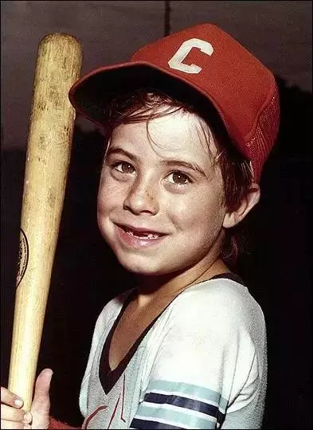
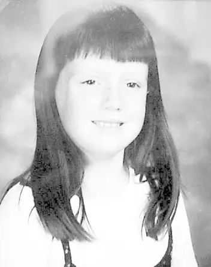

互惠动态
|
|
看美国如何防止拐卖儿童！
提示：点击上方"ASC"↑免费订阅本刊
这两天，你是不是被这样的朋友圈刷屏了？
我在上海。我坚持建议国家改变贩卖儿童的法律条款 我坚持拐卖儿童判死刑！死刑！！收买儿童的也要严惩，至少判无期！孩子都没机会从头再来凭什么给人贩子改过的机会[发怒]
不求点赞，只求扩散！
拐卖儿童再次成为公众热议话题。我们何不来看看美国这方面的情况？！
1990年，全美只有62%的失踪儿童可以被找回，而如今，这一比例已经上升为97.7%。这一切是怎么做到的呢？
推荐一篇好文章《三名孩子改变美国历史——美国的失踪儿童干预系统》
艾坦•帕兹——催生“国际失踪儿童日”
1979年5月25日，6岁的艾坦（Etan Patz）准备第一次独自出门。这个纽约小男孩信心满满，告诉父母要自己穿过两个街区，去搭乘校车。得到同意后，艾坦背着书包，头戴印有“未来航班机长”的帽子出发了。可这竟是父母与孩子的最后一次见面，在这短短的上学路上，艾坦失踪了。
无数记者和警察蜂拥到这对愁眉苦脸的父母面前，看他们如同祥林嫂般一遍又一遍拼写着“艾坦…唉-坦（Etan…ay-tahn）”。随之，媒体的大量报道牵动了整个国家的神经，摄影师父亲给艾坦拍的那张咧嘴开心笑的照片，被登上了覆盖全城的寻人海报，被印在了牛奶盒的侧面进入千家万户，甚至登上纽约时报广场的广告牌。
但艾坦终究没有回来，对于整整一代美国人而言，那个戴着棒球帽的童稚笑容是如此令人痛彻心扉。人们发现，艾坦的失踪背后，正折射出学校与家长联系不紧密的漏洞，也暴露了警方低效无能的现状，根据不同的司法辖区规定，警方甚至要在孩子失踪24-72小时后才会有所反应。
先前虽并没有为美国社会构建万无一失的制度体系，却留下了更宝贵的、可简称为“危机-反思-进步”的自体更新模式。1983年，里根总统宣布艾坦失踪的5月25日为“国家失踪儿童日”，美国社会开始真正重视失踪儿童问题，并开启了为期近10年的“牛奶盒寻人活动”。作为美国最知名的失踪儿童，艾坦的不幸遭遇永远改变了美国，直接影响了接下来一系列法律出台与制度更新，挽救了无数美国儿童。
亚当•沃尔什——“亚当警报”全美最大儿童安全保障机制

时间到了1981年7月27日，佛罗里达州一个闷热的午后。6岁的亚当（Adam Walsh）听从妈妈的安排，在百货商场里看几个孩子打电子游戏。但七分钟后，当亚当的母亲赶来接他的时候，游戏机前却空无一人了。
焦急的父母印了15万份寻人启事，贴满了全城的大街小巷。但噩耗还是击中了这个家庭：两周后，渔民在120英里外的灌溉渠内打捞上来了亚当的头颅。于是，悲痛欲绝的父母向媒体讲述警方是多么不靠谱：在亚当失踪的当天下午，其母就报了警，警方却不但没有及时响应，更告诉媒体“失踪和绑架应该没有关系”；当次日亚当的父亲去警察局追问进展时，警方却回问：“你有什么建议吗？”
虽然杀害亚当的杀手在两年后自首，亚当夫妇却决定从此走上维护儿童安全的道路。在国会山召开的《失踪儿童法案》听证会上，并不精通法律和政治的亚当父亲，却用一句话打动了众人：“一个能发射航天飞机并让它回到地球的国家，竟然没有一个为失踪儿童设立的信息搜集和服务中心？”
随后，《失踪儿童援助法案》也在Walsh夫妇的参与下通过。该法案呼吁在全美范围内建立一条失踪儿童免费报警热线，以及全美失踪儿童的信息汇总和甄别中心。同年，Walsh夫妇成立了非营利组织“全国失踪与受虐儿童服务中心（NCMEC）”，打开了解决失踪儿童问题的关键之门。
1980年代后期，沃尔玛超市启用了儿童安全警报系统，并为纪念亚当而将系统命名为“Code Adam”。如果家长发现孩子在超市走失，可立即求助于此系统，超市所有出入口将全部封闭，工作人员立即进行搜寻，如果10分钟内找不到孩子，将立即由警方接手。此后，这一系统被全美众多超市、商场、医院、博物馆等公共设施采用。
安珀•哈格曼——“安珀警戒”失踪儿童多媒体信息发布系统

然而悲剧还在继续，1996年1月13日，9岁的安伯（Amber Hagerman）在骑车时被绑架。她的尖叫引发了邻居的关注，但这起发生在光天化日下的绑架却依然带来了最悲惨的结局：4天后，她的尸体被发现。
当地居民要求当地广播电台比照天气预报，以同样的频率和力度不间断播出失踪儿童的新闻。半年后，在一场记者会上，有当事者回忆起在寻找安伯的过程中，媒体是如何帮上了大忙。这个信息终于传到了警方的耳朵中，于是经过一系列打造升级后，一个接驳美国紧急警报系统，通过电台、电视台、电子邮件、交通提示、短信、facebook、google等多种渠道，向全国发布失踪儿童信息的庞大系统上线了。这个名为“Amber”的系统所发布的内容由警方决定，通常包含了失踪儿童特征、嫌疑犯特征，以及嫌疑犯的车辆描述和车牌号码。
如果说“Code Adam”解决了儿童在公共场合失踪的问题，“Amber系统”则彻底将失踪儿童和嫌疑犯置于民众的海洋中。1996年以来，这个系统已经成功寻回或解救了602名失踪儿童。以2011年为例，在通过Amber系统成功寻回失踪儿童的案例中，有50%是因为公众或警方通过Amber警报发现了嫌疑犯的车辆；39%是因为公众接到警报后，提供了目击线索等关键信息；更有11%的案例，是嫌疑犯收到警报后释放了被绑儿童。
三名不幸的失踪儿童，却彻底改变了美国解决儿童失踪问题的轨道，其影响之深远，从一组数字便可以看出：1990年时，全美只有62%的失踪儿童可以被找回，而如今，这一比例已经变为97.7%。
正如亚当的父亲，后来成为Fox电视台《头号通缉犯》（这个节目帮助警方找回了65名失踪或被绑架的儿童）主持人的John Walsh所言：“记住，你的参与能改变一切！”